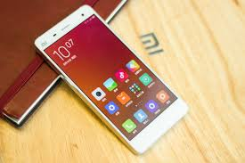
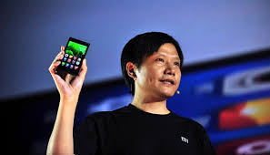
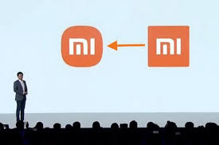

Siapa yang tak kenal dengan produsen ponsel pintar raksasa asal China bernama Xiaomi? Ya, semua pengguna ponsel pintar pasti tahu bagaimana Xiaomi mampu mendobrak pasar di Indonesia. Kini Xiaomi telah berkembang pesat menjadi salah satu perusahaan besar di Beijing yang bergerak di bidang elektronik dan software. Sebenarnya bagaimana kisah atau sejarah perusahaan Xiaomi hingga mencapai kejayaan seperti sekarang? Yuk, simak ulasan singkat berikut ini! salah satu perusahaan besar di Beijing yang bergerak di bidang elektronik dan software. Sebenarnya bagaimana kisah atau sejarah perusahaan Xiaomi hingga mencapai kejayaan seperti sekarang? Yuk, simak ulasan singkat berikut ini!
Xiaomi didirikan oleh delapan mitra pada tanggal 6 Juni 2010. Pada tahap pertama pendanaan investor institusi, termasuk Temasek Holdings, perusahaan investasi milik pemerintah Singapura, perusahaan pendanaan modal dari China IDG Modal dan Qiming Venture Partners, serta perusahaan pengembang prosesor Qualcomm. Pada tanggal 16 Agustus 2010, Xiaomi resmi meluncurkan firmware berbasis Android pertamanya, MIUI. Telepon cerdas pertama diumumkan pada Agustus 2011 bernama Mi 1. Mi 1 menggunakan firmware MIUI berbasis Android .
Pada bulan Agustus 2012, Xiaomi mengumumkan telepon cerdasnya yang bernama Mi 2. Ponsel ini didukung oleh Snapdragon S4 Pro APQ8064 dari Qualcomm, 1.5 GHz quad-core Krait chip, RAM 2 GB, dan GPU Adreno 320.[19] Xiaomi kemudian mengatakan pada tanggal 24 September 2013 bahwa Mi 2 telah terjual lebih dari 10 juta dalam waktu 11 bulan. Mi 2 telah dijual oleh vendor ponsel nirkabel bernama MobiCity di Amerika Serikat, Eropa, Britania Raya, Australia, dan Selandia Baru. Pada tanggal 5 September 2013, CEO Xiaomi Lei Jun secara resmi mengumumkan rencana peluncuran televisi cerdas berukuran 47 inci berkemampuan 3D berbasis Android, yang akan dirakit oleh pabrik televisi Wistron Corporation di Taiwan milik Sony. Pada September 2013, Xiaomi mengumumkan telepon cerdas Mi 3, yang didukung oleh Snapdragon 800 (MSM8974AB) dan chipset Tegra 4 dari NVIDIA.
Pada tanggal 25 September, Xiaomi mengumumkan rencana untuk membuka toko ritel di Beijing. Pada bulan Oktober 2013, Xiaomi dilaporkan sebagai merek telepon cerdas paling banyak digunakan ke-5 di Tiongkok. Pada tahun 2013, Xiaomi telah berhasil menjual 18,7 juta telepon cerdas, dan pada pertengahan tahun 2014 sebanyak 26,1 juta telepon cerdas. Pada tahun 2014, Xiaomi mengumumkan akan memperluas pemasarannya ke luar Tiongkok. Xiaomi memulai debut internasionalnya ke Singapura. Markas internasional juga akan dibangun di ibukota negara, yang akan mengkoordinasikan semua kegiatan termasuk peluncuran produk di wilayah tersebut pada masa yang akan datang.Redmi dan Mi 3 adalah telepon cerdas yang pertama kali dijual di Singapura masing-masing pada tanggal 21 Februari dan 7 Maret.Pada 7 Maret, Mi 3 habis terjual dalam waktu 2 menit di Singapura. Setelah Singapura, Xiaomi juga masuk ke Malaysia, Filipina, dan India.Kemudian, pada bulan-bulan berikutnya Xiaomi juga masuk ke Indonesia, dan akan melakukan ekspansi ke Thailand, Rusia, Turki, Brasil, dan Meksiko.
Pada tanggal 17 Maret 2014, phablet Redmi Note (dikenal juga sebagai Hongmi Note) diumumkan oleh CEO Xiaomi Lei Jun dengan fitur layar HD 5,5 inci berteknologi layar OGS dan memiliki prosesor octa-core dari MediaTek.Ada dua varian dari Redmi Note, satu dengan RAM 1 GB dan penyimpanan internal 8 GB; dan yang satu lagi dengan RAM 2 GB dan penyimpananinternal16 GB.Pada bulan April 2014, Xiaomi membeli domain baru dengan nama Mi.com dengan harga 3,6 juta dolar AS, atau sekitar 44,5 miliar rupiah. Mi.com menjadi nama domain termahal yang pernah dibeli di Tiongkok, seperti yang dikatakan oleh seorang eksekutif senior Xiaomi. Mi.com menggantikan domain Xiaomi.com yang merupakan situs resmi Xiaomi.Pada kuartal 2 2014, Xiaomi telah mengirim 15 juta perangkat atau 14% dari pangsa pasar Tiongkok dan telah mengalahkan Samsung yang hanya mengirim kurang dari 13 juta perangkat.Pada bulan Juli 2014, Xiaomi telah menjual 57.360.000 ponsel. Pada bulan November 2014, Xiaomi mengatakan akan menginvestasikan 1 miliar dolar AS atau sekitar 12,3 triliun rupiah untuk membangun konten televisi. Investasi ini bertujuan untuk memperkaya konten perusahaan dan menjadi penentu arah ekonomi bagi industri.
Pada bulan Desember 2014, Xiaomi menyelesaikan putaran terbaru dari pembiayaan ekuitas yang dipimpin oleh dana teknologi berbasis di Hong Kong All-Stars Investment Limited, dana yang dikelola oleh mantan analis Morgan Stanley Richard Ji meningkatkan lebih dari 1 dolar miliar AS dan memiliki hasil lebih dari 45 dolar miliar AS, menjadikannya salah satu perusahaan teknologi swasta yang paling berharga di dunia.

Pada bulan Maret 2021, Xiaomi mengumumkan logo perusahaan baru, didesain oleh Kenya Hara.
